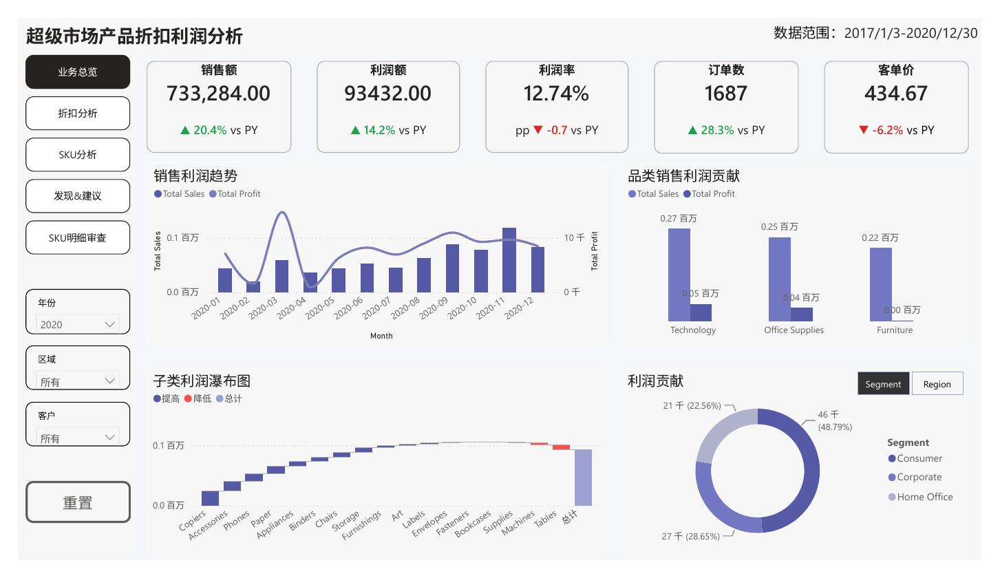
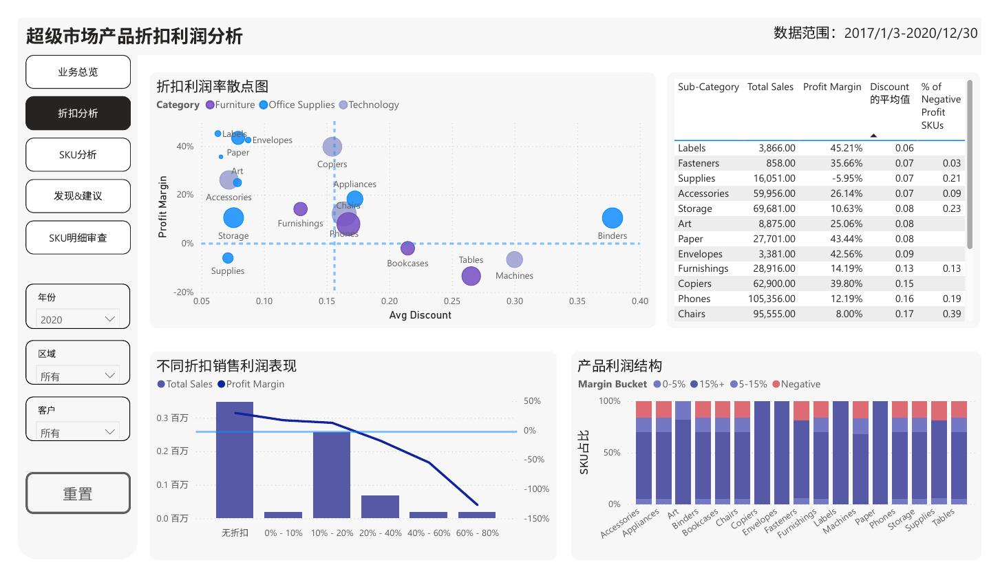
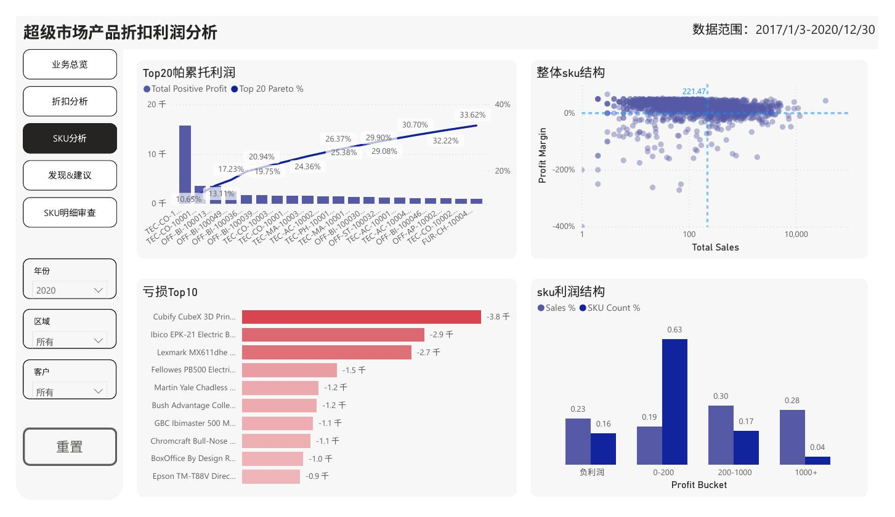
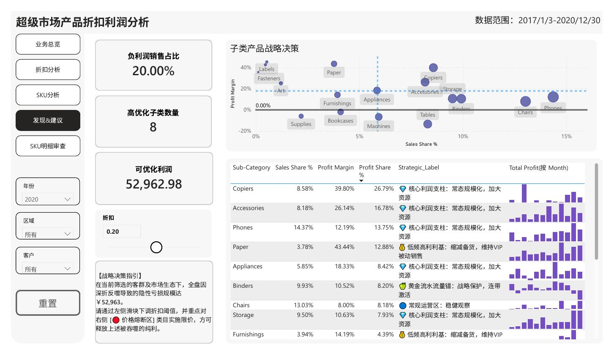
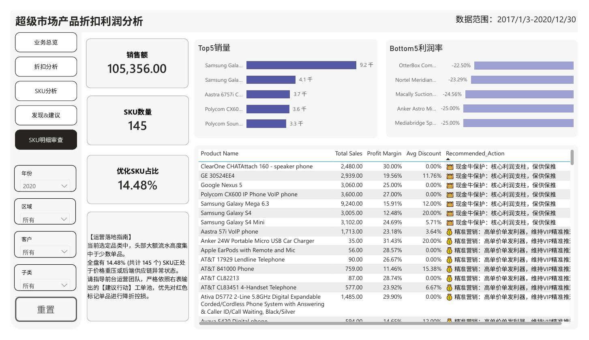

超级市场产品折扣与利润分析看板
数据范围：2017/01/03—2020/12/30。 项目重点是构建可筛选、可下钻的分析视图，识别不同产品和折扣区间下的利润表现。
733,284
业务总览页当前筛选销售额
93,432
业务总览页当前筛选利润额
12.74%
业务总览页当前筛选利润率
1,687
业务总览页当前筛选订单数
以上为 PDF 业务总览页面展示的筛选结果，不代表整个数据集所有年份的汇总值。
基于 Kaggle 公开订单数据，研究销售表现、折扣策略与 SKU 盈利能力。 通过五个 Power BI 页面，从业务总览逐步下钻至折扣、SKU、子类别和产品明细。

数据范围：2017/01/03—2020/12/30。 项目重点是构建可筛选、可下钻的分析视图，识别不同产品和折扣区间下的利润表现。
以上为 PDF 业务总览页面展示的筛选结果，不代表整个数据集所有年份的汇总值。
以下为 Power BI 看板页面预览。静态图片用于快速浏览，完整内容可在下方打开 PDF。




可以直接在网页中阅读，也可以下载 PDF 文件。